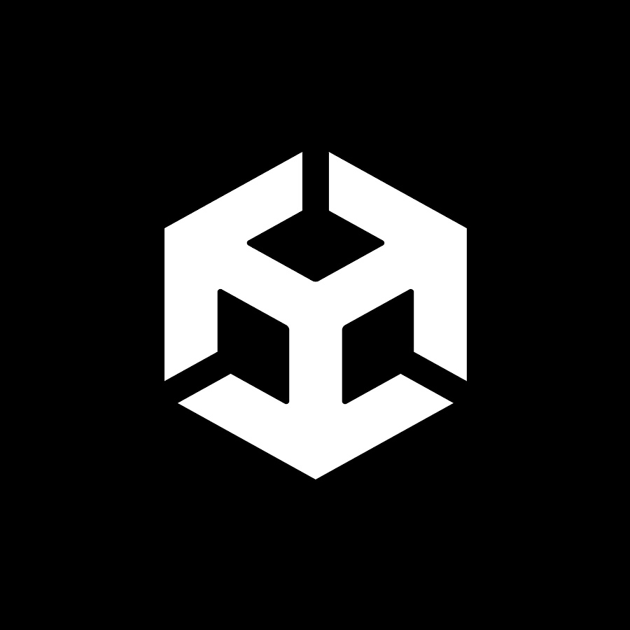
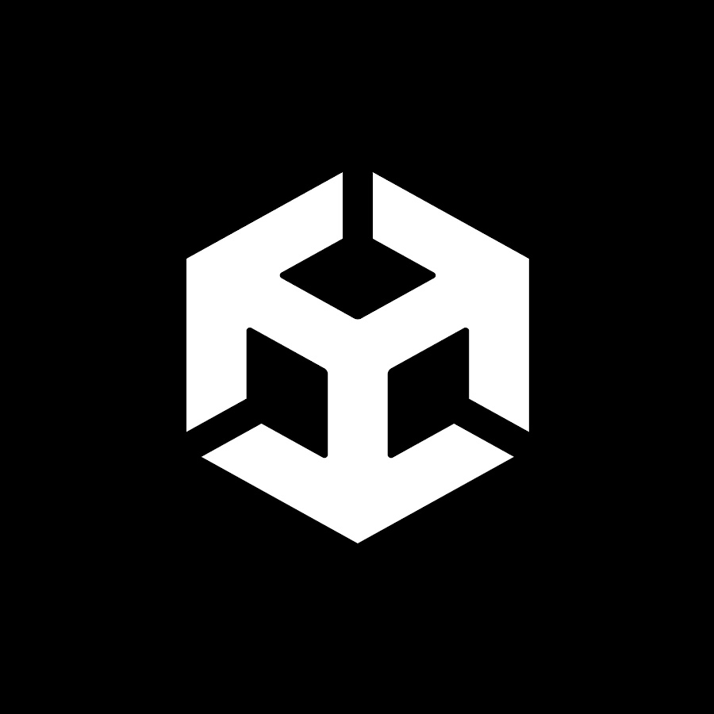

I'm a senior at University of North Carolina at Charlotte, majoring in Computer Science with a concentration in Data Science. My programming background spans Python, JavaScript/TypeScript, and C/C++. I have experience in manufacturing and am passionate about process optimization, efficiency, and automation. I enjoy working in web development, embedded systems, or generally anything that requires problem solving. I have a diverse technical background that also includes welding, manual and CNC machining, residential and industrial electrical, CAD, and basic electronics—among other things.
I spend my free time running, hiking, weightlifting, sailing, and skiing, and have a particular interest in additive manufacturing and metrology. Having recently lived in Europe for over 2 years, I've gained a broader perspective on culture and collaboration.


 
